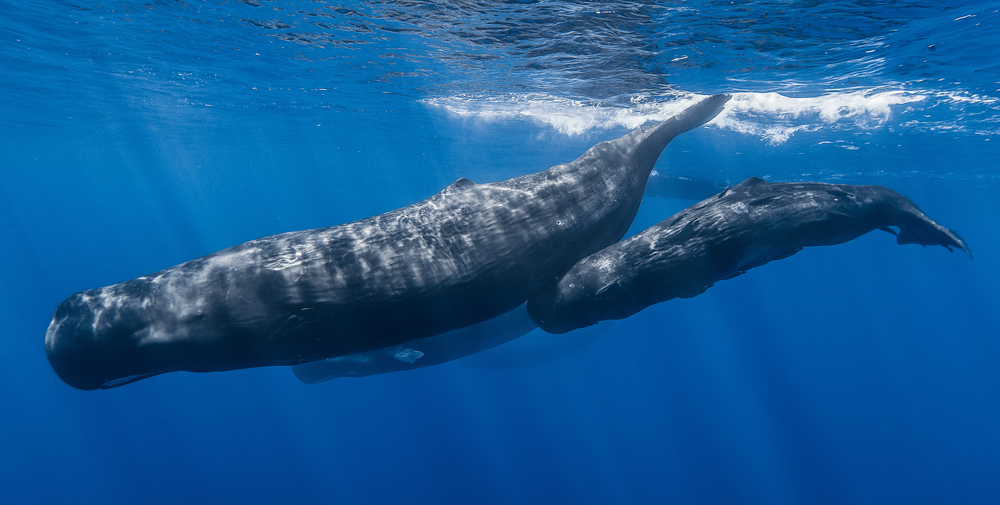

Read the passage and select the main idea in each paragraph.
A
In the murky and mysterious depths of our oceans, where otherworldly creatures drift past each other, like ships in the night, the gift of sight is of little or no use.
B
Surrounded by flashing lights and bright colours, we humans would find it impossible to live under such conditions. However, for ocean-dwelling mammals (some species even live in muddy rivers and estuaries), the cold and dark are of no consequence. What matters to them is sound.
C
Using sound to send out and receive messages in water is effective as it travels five times as fast in water as it does in air. One human calling to another will not be heard a kilometre away, but one whale calling to another may be heard hundreds of kilometres away.

D
The two main reasons for which whales, dolphins and porpoises use sound are communication and echolocation. They transmit a variety of groans, squeals, whistles and barks at high frequency in order to communicate with each other.
E
As well as communication, ocean-dwelling mammals use echolocation to help them learn about their immediate surroundings. They emit brief pulses of sound, clicks, each one usually lasting less than a millisecond, to find out, for example, if there is any prey nearby.